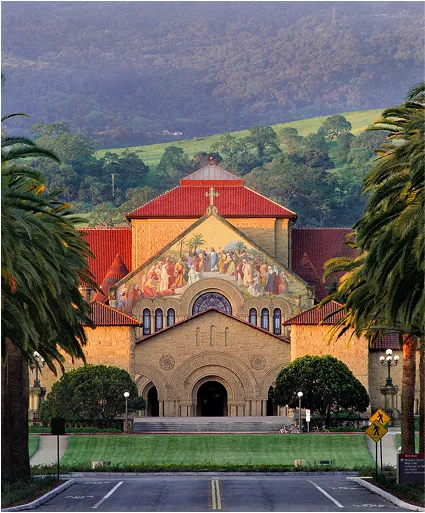
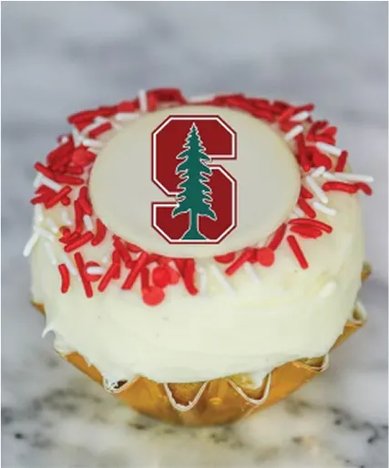
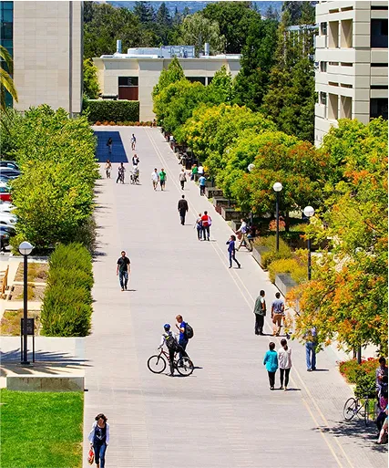
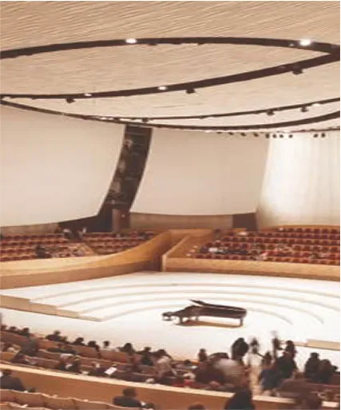
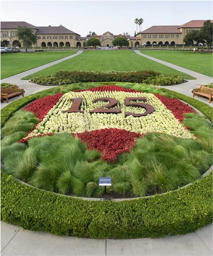
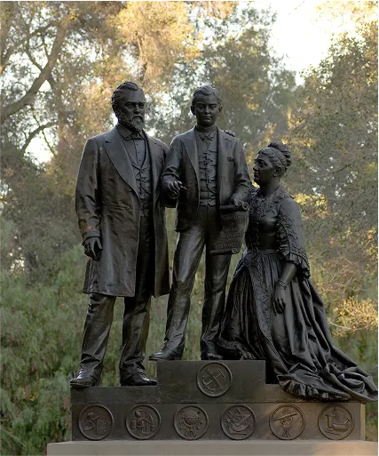

The Dish is a
special area to both Stanford and the surrounding communities, and it serves many purposes.
+

Stanford Memorial
Church is located at the center of Stanford University, and is "the principle building ...
+

Union Square @
Tresidder’s lively campus hub offers a variety of options for all tastes and schedules...
+
The Hoover
Institution Library & Archives supports a vibrant community of scholars interested in the meaning and role
of history and is open to anyone.
+
A self-guided tour
of Stanford Gardens
+

This 13-minute
student-hosted virtual tour is best viewed at 1080s.
+

Self-guided tour
Stanford Arts District (and others arts facilities)...
+

Palm Drive,
Stanford's grand main entry, welcomes students and visitors to a university...
+

Stanford History:
In 1884, tragedy struck the family when Leland and Jane's only child...
+
Stanford University
Quadrangle, Stanford University Campus, Stanford, Santa Clara County, CA
+